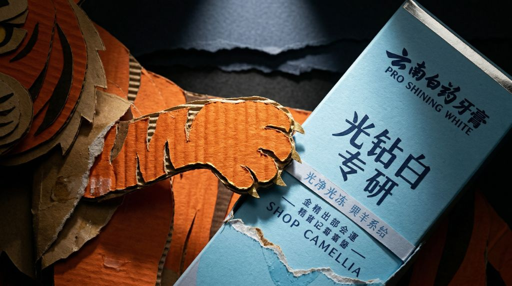

FILM 01 · YUNNAN BAIYAO × WATER MARGIN · PROTECTION
Wu Song Fights the Tiger
武松打虎
《水浒传》中最具冲击力的段落之一，被重新构建为一次仪式化的力量表达：瓦楞纸打造的猛虎与英雄骨架，在 AI 动画的运动语言中回到品牌"守护"的核心。One of the most iconic passages in Water Margin, restaged as a ceremonial expression of strength: paper-crafted tiger and hero forms move through AI-driven cinematography, returning to Yunnan Baiyao's core idea of protection.
Brand ShortPaper CraftAI CinematographyProtection
Chapter武松打虎 · 景阳冈Wu Song · Jingyang Ridge
Brand Angle守护力量Protective Strength
Style纸艺 × AI 动画Paper Craft × AI
成片Film
短片以"景阳冈打虎"作为叙事骨架，把猛虎、酒、山道、月光转化为纸艺造型与镜头语言，收束到品牌的守护主题。Structured around the Jingyang Ridge chapter, the film translates tiger, wine, mountain path, and moonlight into paper-crafted forms and cinematic language that resolve into the brand's protective theme.
"武松打虎"在原著中承担的是"个人英雄面对不可控威胁"的段落。改编时，我把重心放在"守护"上：不是渲染打斗，而是通过身体、道具与光线的关系，去暗示一种可被信任的力量。In the original text, the tiger-fighting chapter delivers a moment of a solitary hero facing an uncontrollable threat. In the adaptation, I refocus the piece around "protection" — not spectacle. The relationship between body, prop, and light suggests a strength that can be trusted.
这也让"英雄"和"品牌"共享同一层意义：不是为了炫技，而是站在使用者一侧的力量。This lets "hero" and "brand" share one layer of meaning: strength that stands on the user's side, not strength for spectacle.
主视觉Key Visual
短片主视觉：瓦楞纸猛虎与云南白药"光钻白 · 光净"产品盒并置，形成"力量 × 守护"的视觉锚点。The film's key visual pairs a corrugated-paper tiger with Yunnan Baiyao's Pro Shining White packaging — visually anchoring "strength × protection."

镜头与视觉系统Shot Language & Visual System
镜头语言Shot Language
以低角度贴地跟拍作为主要节奏，让猛虎在画面中始终具有威胁感；关键情绪节点切换为人物近景与手部特写，把"打虎"重新读作"守护"。Low-angle ground tracking sets the main rhythm, keeping the tiger constantly menacing. Key emotional beats cut to character close-ups and hand details, reframing the "fight" as "protection."
材质与颜色Material & Palette
主体材质为深橘瓦楞纸 + 木色边缘 + 黑色阴影，与云南白药淡蓝色包装形成"暖 × 冷"的品牌反差。月光偏冷白，草坡偏土黄，整体保持仪式感。The main material is deep-orange corrugated paper with wood-tone edges and black shadow, contrasting warm hues against Yunnan Baiyao's cool-blue packaging. Moonlight leans cool white, the mountain grass leans earthy yellow, keeping the whole piece ceremonial.
制作流程Process
01段落提炼Chapter Distillation
从景阳冈章节中筛出适合仪式化改编的关键情绪节点。Selecting the key emotional beats from the Jingyang Ridge chapter suited to ceremonial adaptation.
02纸艺设计Paper Craft Design
为猛虎与武松打样，确定材质、比例、关键剪影。Prototyping tiger and Wu Song forms — material, proportion, and key silhouettes.
03分镜与关键帧Storyboard & Keyframes
先分镜后关键帧，控制打斗节奏与守护主题的转向。Boarding first, then keyframes, controlling combat rhythm and the pivot toward protection.
04AI 动画AI Animation
用提示词与图生视频推进镜头运动、材质呼吸感、月光变化。Prompts and image-to-video drive motion, material breathing, and shifting moonlight.
05品牌收束Brand Resolution
在结尾镜头把产品盒与"守护"主题合并成品牌收束。The final shot merges the product box with the protection theme as the brand resolution.
06剪辑与音乐Editing & Music
剪辑节奏与音乐进入，让整支短片在情绪上闭环。Editing rhythm and music close the emotional loop of the whole short.